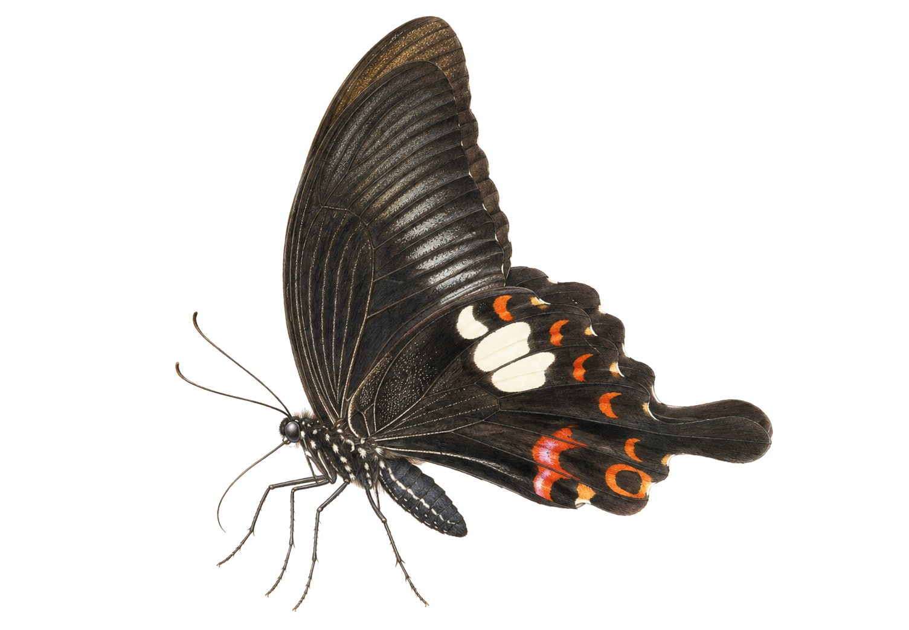

Papilionidae · 008 / 165
রেড হেলেন
Papilio helenus

বৈশিষ্ট্য ও শনাক্তকরণ
কালো পেছনের ডানায় বড় ফ্যাকাশে দাগ থাকে; উড়ার সময় তা সাদা বলে মনে হয়।
স্ত্রী ও পুরুষের পার্থক্য
উভয়ের পেছনের ডানায় ফ্যাকাশে দাগ। ওকিনাওয়ার ক্ষেত্রে নিশ্চিত লিঙ্গ-ভেদচিহ্নের বিস্তারিত যাচাই করা যায়নি।
আকার
সামনের এক ডানার দৈর্ঘ্য 50–75 mm; সাধারণ নির্দেশক, শুধু ওকিনাওয়ার নমুনার পরিসর নয়।
ওকিনাওয়ার দ্বীপে রেকর্ড
স্থানীয় সূত্রে উল্লিখিত দ্বীপের রেকর্ড নিচের সূত্রে দেখুন। ওকিনাওয়া ও আশপাশের দ্বীপ এবং সাকিশিমার কিছু অংশের বনপথ, বনপ্রান্ত ও উপত্যকায় দেখা যায়।
আবাসস্থল
বনপথ, বনপ্রান্ত ও উপত্যকার ফুলযুক্ত স্থান।
জীবনযাপন ও অতিরিক্ত তথ্য
নামের হলুদ দাগ বাস্তবে অনেক সময় সাদাটে দেখায়। ফুলে মধু পান ও ভেজা মাটিতে জল পান করে।
শূককীট ও খাদ্য উদ্ভিদ
Rutaceae পরিবারের Zanthoxylum, Tetradium ও সংশ্লিষ্ট গাছের পাতা খায়।
তথ্যসূত্র ও সহায়ক পাঠ
- 沖縄蝶類生態図鑑：モンキアゲハ
ডেটায় উল্লেখিত সূত্র দেখার তারিখ: 2026-11-10 - 形態・大きさの補足資料
ডেটায় উল্লেখিত সূত্র দেখার তারিখ: 2026-11-10
তথ্য সরবরাহকৃত ডেটার উপর ভিত্তি করে তৈরি (হালনাগাদ: ১০ নভেম্বর ২০২৬)। কোনো দ্বীপের রেকর্ড সেখানে বর্তমান স্থায়ী বসবাস বা সহজে দেখা পাওয়ার নিশ্চয়তা নয়। চিত্র নির্দেশক; শনাক্তকরণে বাস্তব নমুনা ও সূত্র মিলিয়ে দেখুন।